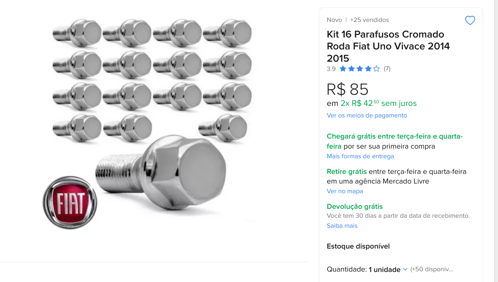
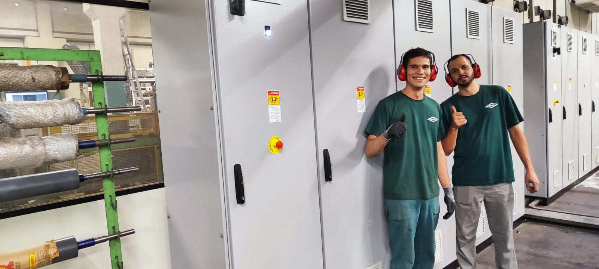
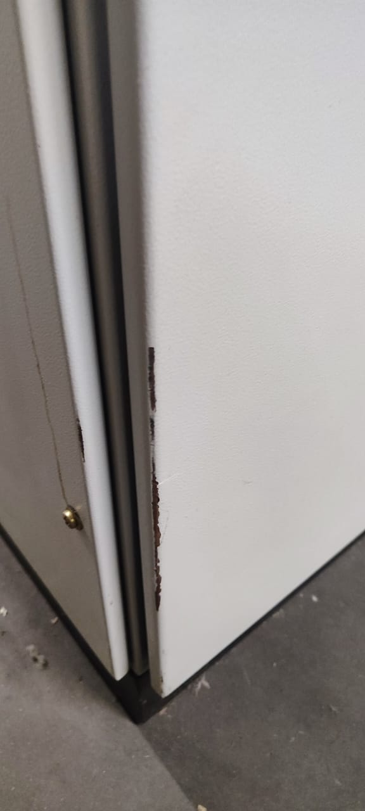
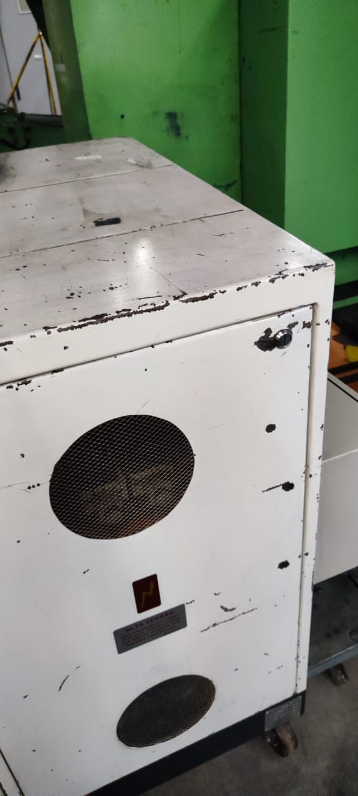
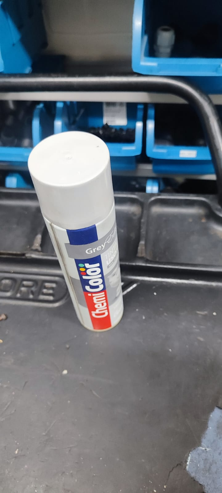
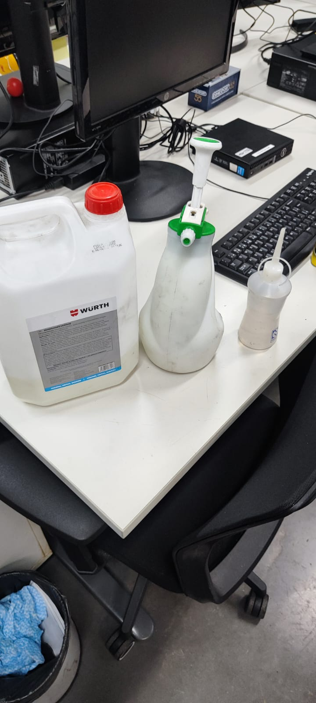

SPOQUTE - Corrosões
Alunos
- Gabriel Arom: SP3176576
- Luigi: SP3183866
- Márcio: SP3175391
Professores
- Lucia
- Caio
Caso 1
Caso 1
Parafusos do Uno
Caso 1
Parafusos do Uno

Potencial:
1. Situação Problema
- Parafusos de Aço-Carbono;
- 98% Ferro;
- Expostos a urina canina;
- A urina dos cães contém compostos como ureia, ácido úrico, e íons como $Na^+, K^+, Cl^-,$ e $NH_4^+$, que podem influenciar a corrosão do aço-carbono.
Potencial:
2. Identificação das Reações
- Reação Anódica: $\text{ Fe} \rightarrow \text{Fe}^{2+} + 2e^{-}$
-
Reação Catódica (em meio ácido): $O_2 + 4e^- + 2H_2O -> 4OH^-$
$4\text{Fe(OH)}_2 + O_2 + 2H_2O \rightarrow 2\text{Fe}_2\text{O}_3 \cdot 3H_2O$
São partes da reação de oxirredução:
Potencial:
3. Potencial Padrão
- Para a reação de oxidação: $\text{ Fe}^{2+} + 2e^{-} \rightarrow \text{Fe}$ (E° ≈ -0.44 V)
- Potencial Padrão para a Redução de $H^+$: $O_2 + 4e^- + 2H_2O -> 4OH^-$ (E° = 0.00 V)
- $E^\circ_{\text{cel}} = E^\circ_{\text{cat}} - E^\circ_{\text{an}}=$ $ 0.00 \, \text{V} - (-0.44 \, \text{V}) = 0.44 \, \text{V}$
Potencial:
4. Potencial Observado:
-
$E = E^\circ - \frac{RT}{nF} \ln Q$
- Onde $Q$ (assumindo uma concentração de $Fe \approx 10^{-3}mol$) =
$Q = \frac{0.001}{(3.16 \times 10^{-7})^2} \approx 10^4$
Potencial:
4. Potencial Observado:
- Substituindo: $E \approx 0.44 - 0.0257 \cdot 4 \approx 0.44 - 0.1028 \approx 0.3372 \, \text{V}$
Taxa de Corrosão
Corrosão por Pites:
-
Taxa $\frac{mm}{ano} = \frac{\text{Profundidade}}{\text{tempo}}$
- Assumindo pites de $1mm$:
$1mm = \frac{0.001}{365} \approx 2.7 \times 10^{-6} \frac{mm}{dia}$
Potenciais Soluções:
- Monitoramento e Inspeção
- Revestimentos Protetores
- Manutenção e Limpeza
Potenciais Soluções:
Potenciais Soluções:
Artigo Sobre corrosão no Aço 10B22Caso 2
Caso 2
Cadeado Molhado
Caso 2
Cadeado Molhado

1. Situação Problema
- Tipo de material:
- Deve ser feito de Ferro ou Aço-Carbono
- Exposição ao Ambiente Externo;
- Presenca de eletrolitos;
Potencial:
2. Identificação das Reações
- Reação Anódica: $\text{ Fe} \rightarrow \text{Fe}^{2+} + 2e^{-}$
-
Reação Catódica : $O_2 + 4e^- + 2H_2O -> 4OH^-$
Que geram: $Fe^{2+} + 2OH^- -> Fe(OH)_2$, que eventualmente se converte em $Fe_2O_3 . H_2O$ (ferrugem).
$E \approx 0.44 - 0.0257 \cdot 4 \approx 0.44 - 0.1028 \approx 0.3372 \, \text{V}$
São partes da reação de oxirredução:
Potenciais Soluções:
- Manutenção e Limpeza
- Revestimentos Protetores
- Substituicao por Materiais Resistentes
Caso 3
Caso 3
Painéis Eletrônicos
Caso 3
Painéis Eletrônicos


1. Situação Problema
- Feitos em chapa de aço carbono comum AISI 1010, com 1,20 mm de espessura;
- Revestidos por pintura eletrostática à pó de poliéster de 80 micrometros;
- Colisões, descasca pedaços de pintura;
- Limpeza com solventes agressores a pintura

$E = E⁰ - (0.05916 / n) · log (1 / ([H⁺]ⁿ · pO₂))$ $E = E⁰ - (0.05916 / 4) . log(1/(1×10⁻²⁸ × 0.21)$ $E = E⁰ - 0.01479 V . 28.678 ~ 0.424 V$ $E = 1.229 V - 0.424 V ~ 0.805 V (SHE)$
Potencial:
$Fe^{2+} + 2OH^- -> Fe(OH)_2$ $Fe_2O_3 . H_2O$ (ferrugem).$E = E⁰ - (0.05916 / n) · log (1 / ([H⁺]ⁿ · pO₂))$ $E = E⁰ - (0.05916 / 4) . log(1/(1×10⁻²⁸ × 0.21)$ $E = E⁰ - 0.01479 V . 28.678 ~ 0.424 V$ $E = 1.229 V - 0.424 V ~ 0.805 V (SHE)$
Soluções:

